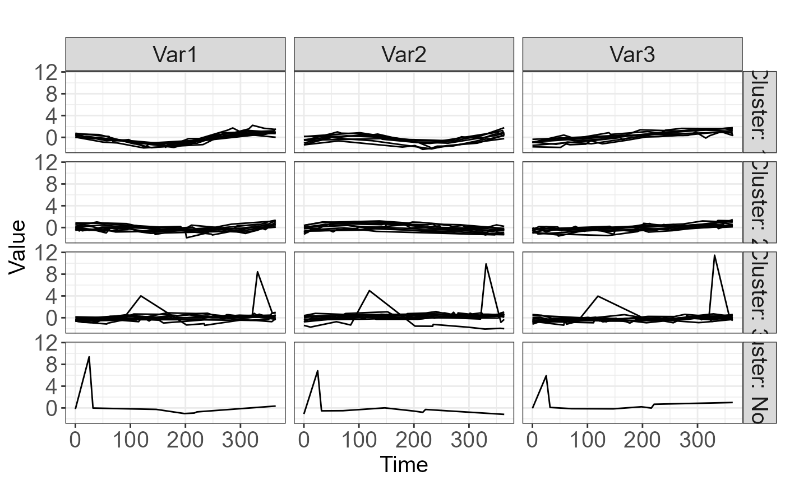

Plot an object of class FKM.predicted
plot.FKM.predicted.RdPlot an object of class FKM.predicted
Usage
# S3 method for FKM.predicted
plot(
x,
center = TRUE,
xmin,
xmax,
ntime = 100,
lab_x,
lab_y,
bw = TRUE,
title,
title_size = 15,
axis_label_size = 15,
axis_title_size = 15,
legend_label_size = 15,
strip_label_size = 15,
type = "raw_grid",
...
)Arguments
- x
An object of class
FKM.predicted- center
Logical expression indicating whether trajectories are centered on individual means.
- xmin, xmax
Optional minimum and maximum values to show on x-axis.
- ntime
Optional number of times to calculate fitted values for smoothed plots.
- lab_x, lab_y
Optional labels for x- and y-axis.
- bw
Logical expression for black and white graphic.
- title
Optional title.
- title_size
Optional title size.
- axis_label_size
Optional size of axis labels.
- axis_title_size
Optional size for axis titles.
- legend_label_size
Optional size for legend.
- strip_label_size
Optional size for strip labels on graphics.
- type
Type of plot to produce. Options are "raw", "raw_grid", "smooth", and "smooth_grid".
- ...
Additional arguments
Examples
library(tidyr); library(dplyr); library(mgcv); library(fclust); library(ggplot2)
data(TS.sim)
fitsplines <- TPSfit(TS.sim, vars=c("Var1", "Var2", "Var3"), time="Time",
ID="SubjectID", knots_time=c(0, 91, 182, 273, 365), n_fit_times=10)
clusters1 <- cluster.fitted(fitsplines, k=3, m=1.3, seed=12345, RS=5, noise=TRUE)
predicted_clusters <- predict(clusters1, TS.sim.new)
plot(predicted_clusters, label_size=10, type="raw_grid")
